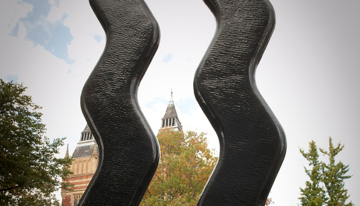
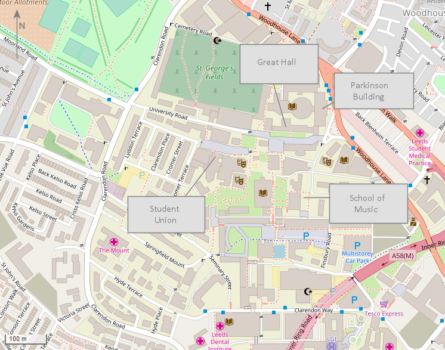
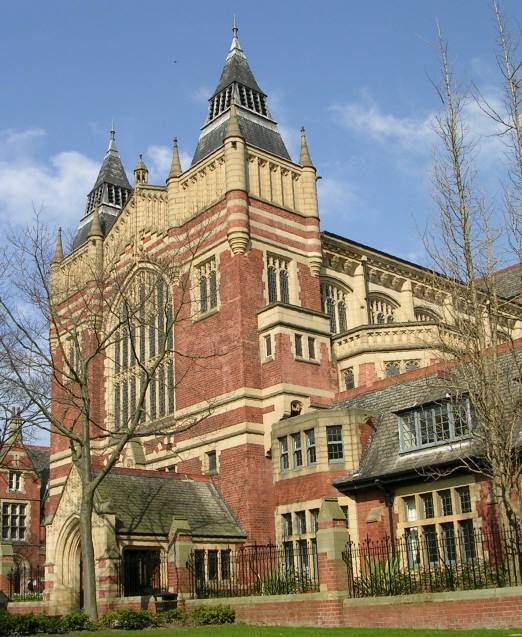

If you have 30 mins: things to do in the University:
Everyone needs a break now and then! If you find yourself conferenced out, or have 30 minutes at lunch or after sessions, here's some things you might like to do on campus.
- Visit the University Gallery; as well as the extensive displays from the University collection, the
gallery is also currently housing the work of the top four arts and design graduates. This is in the Parkinson Building: go
up the front steps, and when you get into the
main hall, turn left and the gallery is just along the wall.
- Visit the Treasures of the Brotherton. The University has a fantastic special collection section in its Brotherton library, and this museum displays some of the
best. As well as the permanent displays, there is currently an exhibition of the University's internationally renowned collection of cookery books. The collection is in the Parkinson Building: go
up the front steps, and when you get into the main hall, turn right and the rooms are just along the wall.
- Visit the Textiles Museum or the Marks and Spencer's Archive. Leeds grew on the back of the textiles industry, and the University was, in part, cofunded by clothworkers to provide a scientific foundation and
training for the town industry. The University still has a textiles department, as well as an extensive clothing and retail archive in the form of the
Marks and Spencer's Archive, but it also has a wonderful Textiles Museum (open Tues;Wed;Thur). As well as textiles, this is currently housing an exhibition of
Japanese Katagami stencils. To find the museum, walk up the road alongside the Great Hall and keep walking until you come to a set of traffic lights. Over the road, you'll
see the back of the chapel housing the museum. To get in, walk up the left side of the chapel, go through the rotating doors, and double back down the corridor into the chapel. To find the
Marks and Spencer's Archive, go to the rotating doors; with these at your back, go down the steps across the plaza to the front and right of you. Walk into the field. The archive is the
large building covered in brown mirrored material. There's also a map on their website.
- Go on the University Public Art walk. The University has an extensive collection of sculpture, and there's a nice walk designed to
take you around it. For more information, see the website and download the
PDF trail guide.
- Go on an architectural tour of the University. Take in some of the most interesting civic architecture in Leeds,
from the late 1800s to the present day.
- Hit a café or food stall. The Uni is warming up towards term, and the Union is just undergoing a massive refurbishment, but there's still plenty of small cafés and bars in the
Union. To get to the Union, walk down the road alongside the Great Hall until you see a round plaza containing
a giant sculpture of two black wiggles (Keith Wilson's "Sign for Art"; see photo). Cross this diagonally, and walk up the road/slight hill. Walk through the old manor house gateway, and the Union is the building on the left. It's a complete maze, but most of the
cafés, shops, and bars are downstairs. Go in the building and keep going ahead, and you'll reach the stairs down to the shops and cafés. To the left of these stairs are stairs up to the Terrace Bar. At the bottom of the stairs to the
shops and cafés, double back on yourself and continue down to reach the Old Bar.
- Go Hunting Pokémon on Campus or go GeoCaching (there's more than one on campus)! Go on - Gotta Catch 'Em All!

Sign for Art by Keith Wilson
 Map © OpenStreetMap contributors

The Parkinson Building by Lanchester, Lucas and Lodge

The Great Hall by Alfred Waterhouse